Hardware Inventory
Last updated: 2026-07-08 Physical hosts only — VMs/containers documented in network_context.md Ordered by utility — least capable first, most capable last
Adding Photos
Save host photos to docs/images/hw/ and name them to match the image references below (e.g. proxmox-deb.jpg).
Lab Audio
| Item | Model | Status | Location | Notes |
|---|---|---|---|---|
| Logitech Z-680 5.1 | Z-680 (THX, Dolby Digital, DTS) | ⚠️ Partially functional | Control pod on Pi rack | Only 1 speaker working. Sub caps blown — known failure mode for this model. Drew to recap sub or replace system. |
Ewaste / Recycled
| Photo | System | Reason |
|---|---|---|
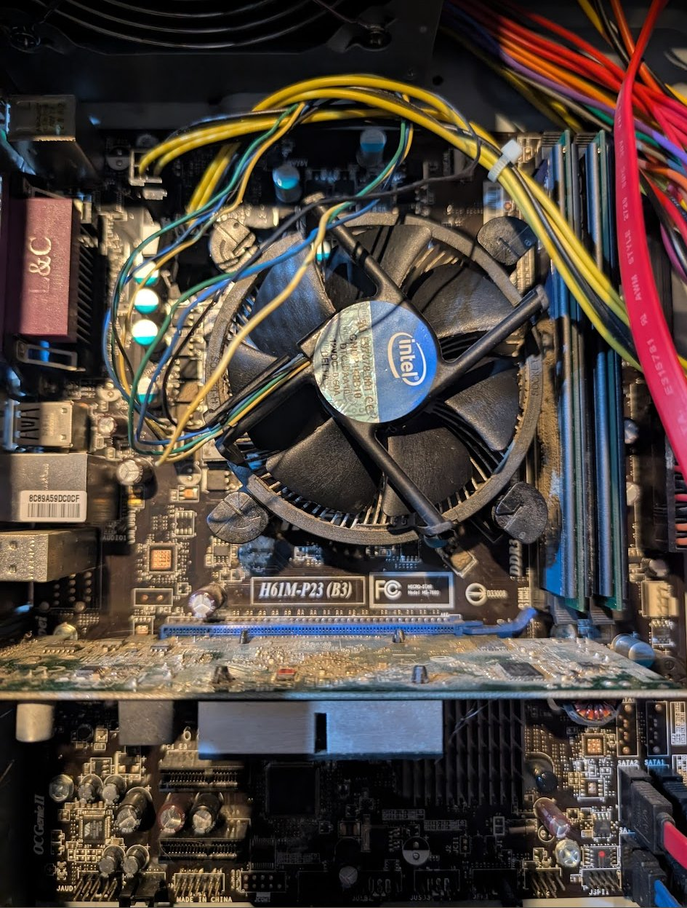 |
MSI H61M-P23 (B3) — LGA1155 | Broken CPU cooler, won't POST — recycled |
| --- | ||
| ## lee-deb — Dell Inspiron 3647 | ||
| -- | -- | |
 |
Role: Immich photo server — memorial machine Make: Dell Inspiron 3647 (Small Form Factor) Chipset: Intel H81 (Haswell, 2013) CPU: Unknown — up to i7-4790 (4th gen) RAM: Unknown — max 16GB DDR3 Storage: Samsung 870 EVO 1TB SSD (pending install) OS: Ubuntu Server 26.04 LTS (pending install) IP: Not yet assigned PSU: 220W — low-profile GPU only Name: lee — personal/memorial Best uses: Immich photo server, lightweight Linux utility box, PiHole Easy upgrades: SSD already planned. RAM cheap if needed. Notes: Sentimental machine — belongs to family. Original HDD preserved as-is. |
|
| --- | ||
| ## restic-deb → blaine-pve (192.168.1.40) | ||
| -- | -- | |
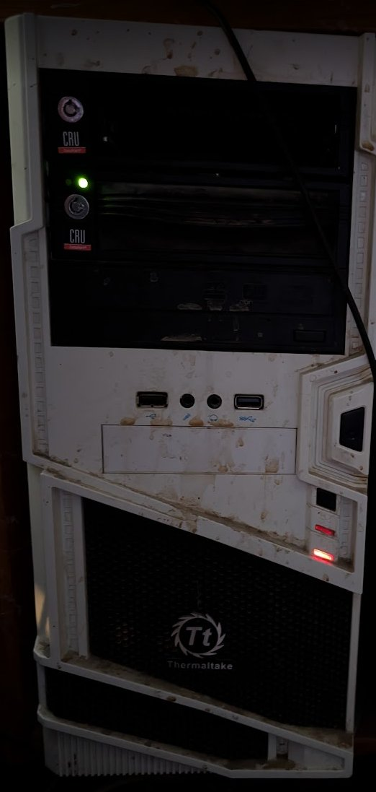 |
Role: ⚠️ Planned repurpose — Proxmox VE node (blaine-pve). Currently Ubuntu 26.04 LTS. Motherboard: Gigabyte Z77-DS3H (Intel Z77, LGA1155) CPU: Intel Core i5-2500K @ 3.30GHz (Sandy Bridge 2011, 4c/4t) RAM: 32GB DDR3 (2x Samsung 8GB DDR3-1600 + 2x Timetec 8GB DDR3-1333) — upgraded 2026-06 RAM max: 32GB DDR3 — maxed BIOS: AMI F8 (2012-08-20) OS: Ubuntu 26.04 LTS (kernel 7.0.0-22-generic) → Proxmox VE (planned) Form factor: Thermaltake white full tower — 2x CRU hot-swap bays, USB 3.0 front panel IP: 192.168.1.40 Name (current): restic-deb — Greyhawk. Planned name: blaine-pve — Dark Tower (Blaine the Mono) CRU scripts: Committed to Gitea pre-wipe (192.168.1.3:3000/cos/scripts-restic-deb, commit 4ad5a94) Best uses: Proxmox node, CRU drive rotation (drives stay connected to PVE host), PBS mirror candidate |
|
| ### Storage | ||
| Device | Type | Size |
| -------- | ------ | ------ |
| sdd | SSD | 238.5GB |
| sda | HDD (external) | 3.6TB |
| sdb | HDD (external) | 3.6TB |
| sdc | HDD (external) | 2.7TB |
| --- | ||
| ## truenas (192.168.1.5) — NAS Primary Storage | ||
| -- | -- | |
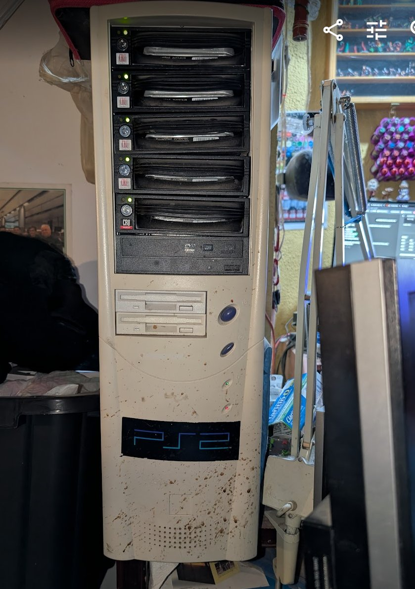 |
Role: NAS — primary storage Motherboard: Gigabyte Z77-DS3H (Intel Z77, LGA1155) — ⚠️ pending replacement with temerant hardware CPU: Intel Core i5-3570K @ 3.40GHz (4 cores) — Ivy Bridge 2012 — ⚠️ pending replacement RAM: 32GB DDR3-1600 (2x Crucial Ballistix 8GB + 2x Crucial UDIMM 8GB) — upgraded 2026-06 RAM max: 32GB DDR3 — maxed (pending upgrade to 32GB DDR4 via temerant hardware swap) BIOS: AMI F9 (2012-09-19) — CMOS battery replaced 2026-07-03 (board wasn't holding boot device order across power cycles) OS: TrueNAS CORE 13.0-U6.8 — migrated 2026-04-27 Hostname: truenas-bsd — canonical name, confirmed live on git-ansible 2026-07-21 ( ping truenas-bsd resolves 192.168.1.5). Matches fleet convention (shardik-pve1-deb, maturin-pve2-deb, aslan-pve3-deb, blaine-pve4-deb, babar-pve5-deb). Source was /etc/hosts on git-ansible, not the router's DHCP reservation (that field is tag, doesn't generate DNS records). ⚠️ Only fixed on git-ansible so far — rest of fleet got /etc/hosts from the last homelab_baseline.yml run and still holds freenas-bsd until baseline runs again. Box's own OS-level hostname still reports truenas.local (harmless, not network-resolvable, cosmetic only).NIC: Intel X540-T2 ix0 — ✅ PRIMARY as of 2026-07-04, static 192.168.1.5/24, confirmed active/stable at 1000baseT full-duplex (capped by SG200-50 switch, not the card). Earlier "suspected DOA" diagnosis was wrong — both ports showing "no link" via dhclient was because the interfaces were never brought administratively up (ifconfig up), not a hardware fault; once brought up, ix0 came up clean. ix1 still DOWN, untested further, low priority. Onboard alc0 (AR8161, alc driver) — retired 2026-07-04, physically unplugged. Had been severely throughput-limited (~340kB/s regardless of protocol/client, cause traced to marginal hardware/cabling, never fully root-caused) before being fully replaced by ix0. USB NIC (ue0) retired earlier. Separately: Dell 0THGMP (Intel I350-T4 quad-port) tried 2026-07-04 as an alternative — caused continuous beeping + auto-shutdown on this board, looks like a BIOS/Option ROM/CSM issue specific to this aging Z77-DS3H board rather than the card itself (reportedly worked fine in another machine previously, possibly shardik) — not resolved, not installed.Form factor: Beige full tower ATX (~1999) — 5x CRU hot-swap bays, 1x CRU bay available, 2x internal mounts available Best uses: NAS — irreplaceable 90TB RAIDZ1 pool. History: Case bought 1999. TRYAGAIN pool survived a motherboard failure — imported in 30 minutes after emergency mobo swap. No data loss. Migrated from FreeNAS 11.3 to TrueNAS 13.0 on 2026-04-27. ⭐ Planned Hardware Rebuild — temerant components: - Gigabyte AB350-Gaming (AMD B350, AM4) - Ryzen 5 1600X (6c/12t) - 32GB DDR4 - GTX 1080 Ti (Plex hardware transcoding) - 500GB SSD for TrueNAS OS boot (replace USB drives) - LSI 9207-8i or 9211-8i HBA (~$20-40 eBay) + 2x SFF-8087 breakout cables ⚠️ HBA not yet found — order if not located - Future: up to 8 drives total — 1x CRU hot-swap + 2x internal mounts available |
|
| ### Storage | ||
| Pool | Drives | Size each |
| ------ | -------- | ----------- |
| TRYAGAIN | 5x (ada0-ada4) | 18.19TiB |
| boot-pool | 1x USB (da1) | 29GB SanDisk |
| ### TRYAGAIN Drives | ||
| Device | Model | Serial |
| -------- | ------- | -------- |
| ada0 | Seagate Exos X20 ST20000NM007D | ZVT6XFQC |
| ada1 | Seagate Exos X20 ST20000NM007D | ZVT7CXJR |
| ada2 | Seagate Exos X20 ST20000NM007D | ZVT7B8G6 |
| ada3 | Seagate Exos X20 ST20000NM007D | ZVT7JN18 |
| ada4 | WD Ultrastar DC HC560 WUH722020BLE6L4 | 9BHXKBKL |
| ### TRYAGAIN Datasets | ||
| Dataset | Type | Used |
| --------- | ------ | ------ |
| plex | dataset | ~59TB |
| jails | dataset | 1.15TiB |
| iocage | dataset | 91.74GiB |
| QUANTUM-g52439 | zvol | 25.61GiB |
| ### ZFS Health | ||
| - Last scrub: 2026-05-18 — repaired 1.11M, 0 errors | ||
| - ✅ ada4 replaced with WD HC560 WUH722020BLE6L4 — resilver complete 2026-06, pool HEALTHY | ||
| - ⚠️ boot-pool DEGRADED — USB boot drive needs replacement (parts available in reserve) | ||
| --- | ||
| ## Raspberry Pis | ||
| Photo | Hostname | IP |
| ------- | ---------- | ---- |
 |
pi3-deb | 192.168.1.124 |
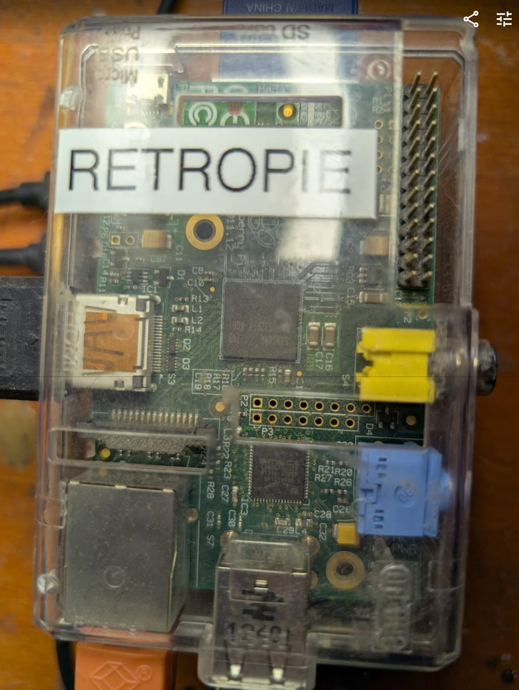 |
pi1-deb | 192.168.1.120 |
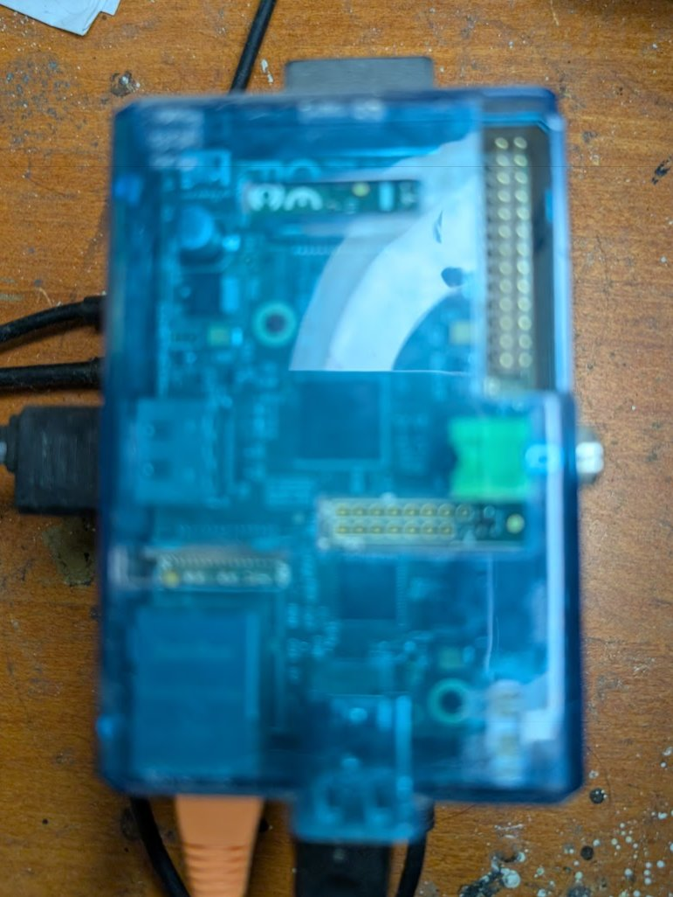 |
pi2-deb | 192.168.1.121 |
| — | pi2b (unassigned) | TBD |
 |
pi4-deb | 192.168.1.126 |
 |
octopi-pi4-deb | 192.168.1.122 |
 |
ha-net | 192.168.1.125 |
 |
batocera-deb | 192.168.1.123 |
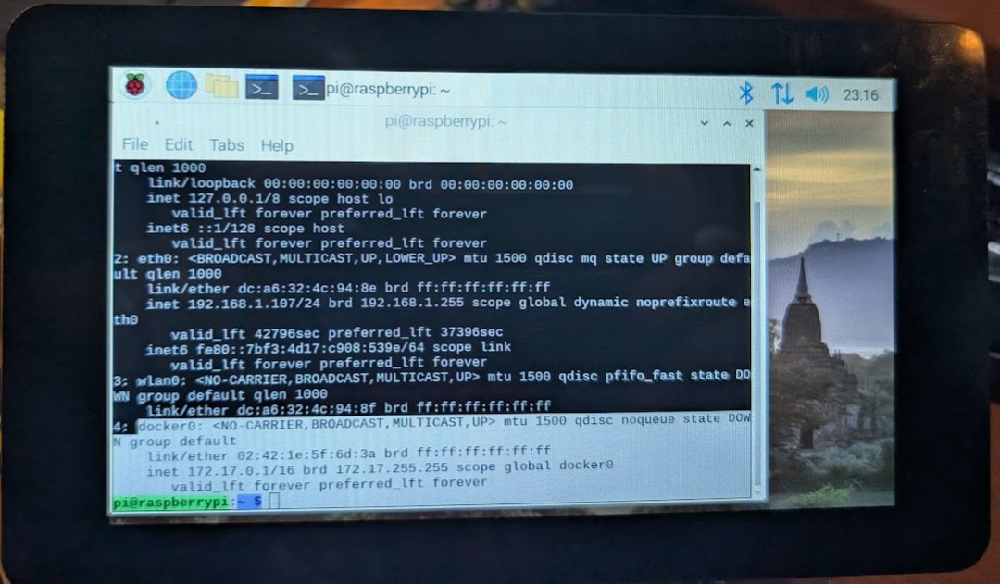 |
argos-deb | 192.168.1.127 |
Pi Rack — 3D Printed Red/Black Tower
Photographed 2026-06-30. Desk location. Z-680 control pod sits on top shelf. 6-slot, 3-tier (2 per tier).
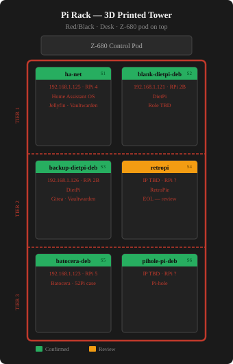
| Slot | Hostname | IP | Model | Software | Notes |
|---|---|---|---|---|---|
| Top | — | — | — | — | Z-680 control pod rests here |
| S1 | ha-net | 192.168.1.125 | RPi 4 | Home Assistant OS · Jellyfin · Vaultwarden | Tier 1 left |
| S2 | blank-dietpi-deb | 192.168.1.121 | RPi 2B | DietPi | Tier 1 right — role TBD |
| S3 | backup-dietpi-deb | 192.168.1.126 | RPi 2B | DietPi · Gitea mirror · Vaultwarden backup | Tier 2 left |
| S4 | retropi | TBD | RPi ? | RetroPie | Tier 2 right — EOL, kept for patching only |
| S5 | batocera-deb | 192.168.1.123 | RPi 5 | Batocera | Tier 3 left — 52Pi case |
| S6 | pihole-pi-deb | 192.168.1.120 | RPi (armv6l) | Pi-hole | Tier 3 right — IP confirmed 2026-07-22 via live SSH, same box as pi1-deb/pihole-pi1-deb aliases |
argos-deb (192.168.1.127)
| Role: IoT field station — TBD Model: Raspberry Pi 4 Model B Rev 1.1 (BCM2711) RAM: 1GB (870MB available) Storage: 32GB PNY microSD (Bookworm 64-bit) OS: Raspberry Pi OS Bookworm 64-bit — onboarded ✅ IP: 192.168.1.127 Origin: Ewaste find — someone's serious IoT project Display: Official Raspberry Pi 7" touchscreen ✅ working Camera: Raspberry Pi Camera V2.1 — untested on Bookworm Cellular: Sixfab mPCI-E Base Shield V2 + Quectel EC25-A 4G LTE — needs SIM card Radio: Adafruit RFM9x LoRa — long range RF, GPIO connected Best uses: Mobile homelab node (Tailscale+LTE), LoRa gateway, security camera, HA kiosk display, field sensor station Easy upgrades: Add SIM card (Hologram.io), reconnect Sixfab shield, test LoRa radio |
|
| --- | |
| ## 3D Printers | |
| Photo | Printer |
| ------- | --------- |
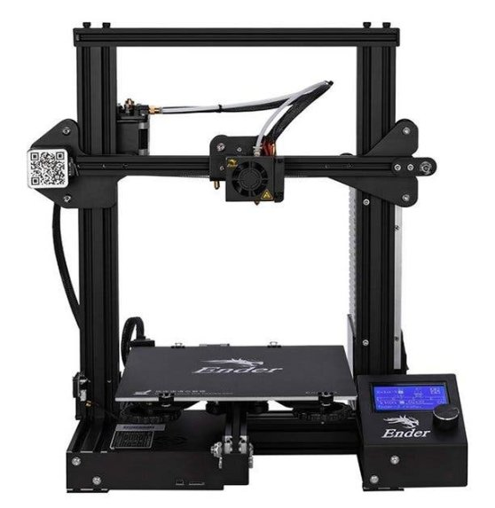 |
Creality Ender 3 V1 |
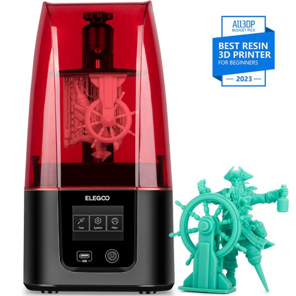 |
Elegoo Mars 3 |
 |
Flashforge Dreamer |
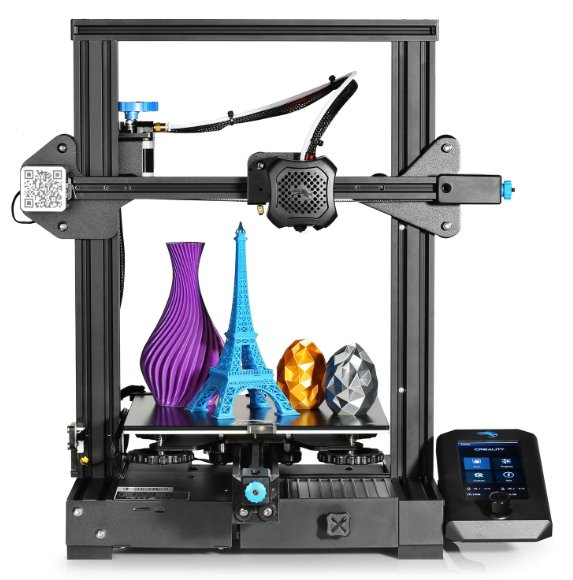 |
Creality Ender 3 V2 |
| --- | |
| ## GPU Stock (undeployed) | |
| Photo | Item |
| ------- | ------ |
 |
GTX 1080 |
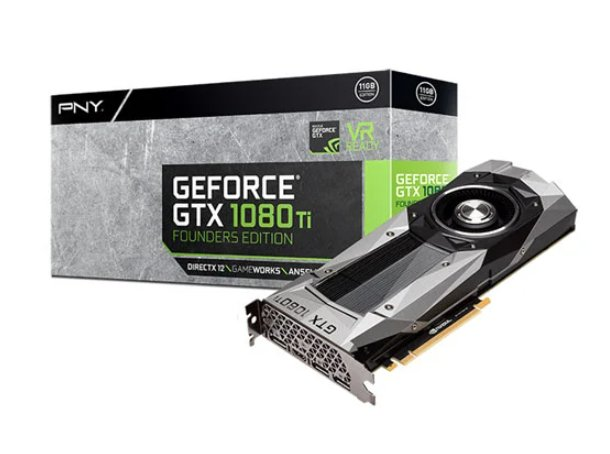 |
GTX 1080 Ti |
| --- | |
| ## pve3 (offsite — ThinkStation) | |
| -- | -- |
 |
Role: Proxmox VE node 4 — offsite Make: Lenovo ThinkStation (model unknown) CPU: Unknown RAM: Unknown Storage: Unknown OS: Proxmox VE Location: Offsite Tailscale: Not yet configured Best uses: Proxmox node 4 — offsite DR Notes: Needs full inventory, Tailscale, and documentation |
| --- | |
| ## Unknown Waiting System | |
| Photo | # |
| ------- | --- |
 |
5 |
| --- | |
| ## urnst-deb (192.168.1.27) | |
| -- | -- |
 |
Role: Hardware diagnostics + TBD — Proxmox node candidate Motherboard: Gigabyte AB350-Gaming-CF (AMD B350, AM4) CPU: AMD Ryzen 5 1600X (6c/12t, 3.6GHz) RAM: 16GB DDR4 2133 — upgraded 2026-06 (filled remaining slots from reserve) RAM max: 16GB DDR4 (4x 4GB) — maxed GPU: AMD Radeon HD 7450 — display only OS: Debian 13 (Trixie) — fresh install 2026-04-13 Form factor: Thermaltake white full tower — 2x 5.25" bays, front USB IP: 192.168.1.27 Name: Urnst — County of Urnst, Greyhawk Best uses: Proxmox node candidate, PBS backup server, general Linux server, CPU swap test bench Easy upgrades: Replace HD 7450 with GTX 1080/1080 Ti from stock. ⚠️ Status: Administratively offline as of 2026-07-21 (intentional, confirmed by Chris — not a fault, "no route to host" during ansible run was expected). |
| ### Storage | |
| Device | Type |
| -------- | ------ |
| sda | HDD |
| sdb | HDD |
| sdc | HDD |
| --- | |
| ## maturin (192.168.1.7) — Proxmox node 2 | |
| -- | -- |
 |
Role: Proxmox VE node 2 Make: Dell OptiPlex 7050 (SFF) Motherboard: Dell 0NW6H5 CPU: Intel Core i7-6700 @ 3.40GHz (4c/8t, Skylake 2015) RAM: 64GB DDR4 (4x16GB, DIMM1-4 — confirmed via dmidecode -t memory 2026-07-08, corrects prior stale 32GB entry)RAM max: 64GB DDR4 — maxed BIOS: Dell 1.11.0 (2018-11-01) OS: Proxmox VE / Debian 12 IP: 192.168.1.7 Form factor: Small form factor desktop Best uses: Proxmox node 2 — runs monitor-deb, git-ansible, docker-deb, mediastack-deb |
| ### Storage | |
| Device | Type |
| -------- | ------ |
| sda | SSD |
| nvme0n1 | NVMe |
| ### VMs on maturin | |
| VMID | Name |
| ------ | ------ |
| 106 | git-ansible |
| 107 | docker-deb |
| 113 | mediastack-deb |
| 900 | ubuntu-24.04-template |
| --- | |
| ## aslan (192.168.1.9) — Proxmox node 3 | |
| -- | -- |
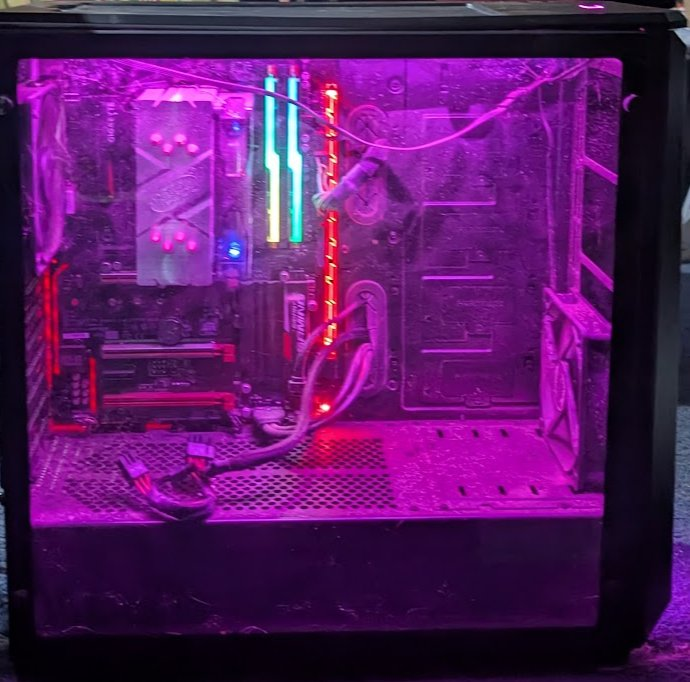 |
Role: Proxmox VE node 3 — GPU passthrough host Motherboard: Gigabyte AB350-Gaming 3-CF (AMD B350, AM4) CPU: AMD Ryzen 5 1600X (6c/12t, 3.6GHz) RAM: ✅ 96GB DDR4-2666 (2x32GB + 2x16GB, mixed/asymmetric config — upgraded 2026-07-22, confirmed via free -h post-swap: 94GB usable + hypervisor overhead)RAM max: 128GB DDR4 — 32GB headroom remaining, would need the last 2x16GB swapped to 32GB for full max Storage: Samsung 970 EVO Plus 500GB NVMe (sdc — LVM root + thin pool), 3TB HDD (sda → /mnt/hdd3tb = SDA_store), 12TB HDD (sdb → /mnt/hdd12tb, 22 uncorrectable errors — non-critical only) GPU: GTX 1080 Ti — bound to vfio-pci (10de:1b06, 10de:10ef), IOMMU group 2 OS: Proxmox VE 9.2.3 IP: 192.168.1.9 Name: Aslan — Guardian of the Beam, Dark Tower History: Was idee-deb (Greyhawk). Repurposed as Proxmox node 3 — 2026-06-16. Notes: No physical console — Ryzen has no iGPU and GPU is vfio. Manage via SSH/web UI only. |
| ### Storage Layout | |
| Store | Path |
| ------- | ------ |
| local | / |
| local-lvm | thin pool |
| SDA_store | /mnt/pve/SDA_store |
| hdd12tb | /mnt/hdd12tb |
| ### VMs & LXC on aslan | |
| VMID | Name |
| ------ | ------ |
| 104 | swarm02-worker |
| 105 | swarm03-worker |
| 108 | alma-rpm |
| 109 | rocky-rpm |
| 110 | pihole-book-deb |
| 111 | kasm-2404-deb |
| 115 | pbs |
| --- | |
| ## temerant-win (192.168.1.105) — ⭐ Donor system for TrueNAS rebuild | |
| -- | -- |
 |
Role: Hardware donor for TrueNAS rebuild — pending data check Motherboard: Gigabyte AB350-Gaming (AMD B350, AM4) CPU: AMD Ryzen 5 1600X (6c/12t, 3.6GHz) RAM: 32GB DDR4 2133 (4x 8GB G.Skill F4-2400C15 — full 4 slots) RAM max: 64GB DDR4 GPU: NVIDIA GeForce GTX 1080 Ti (11GB VRAM) ✅ already installed OS: Windows 10 Pro (1909 — EOL) — LaunchBox/ROM gaming Form factor: Mid-tower, tempered glass, AIO cooler, RGB IP: 192.168.1.105 Name: Temerant — world of Kingkiller Chronicle (Rothfuss) Planned fate: Gut mobo + CPU + RAM + GPU + 500GB SSD → install into TrueNAS beige full tower. Temerant chassis retired. ⚠️ Before gutting: Check 2x 3TB HDDs for important data. Move to urnst-deb or eld-win if needed. Notes: Currently used for LaunchBox ROM gaming (Z:\ROMs mapped from \freenas\plex\ROMs). RetroAchievements configured. |
| ### Storage | |
| Device | Type |
| -------- | ------ |
| Disk C: | SSD |
| Disk D: | HDD |
| Disk E: | HDD |
| --- | |
| ## shardik (192.168.1.2) — Proxmox node 1 | |
| -- | -- |
 |
Role: Proxmox VE node 1 — primary hypervisor Motherboard: ASRock AB350M Pro4 CPU: ❌ AMD Ryzen 7 2700X (8c/16t, 3.7GHz) — DEAD, confirmed 2026-07-21 RAM: ✅ 64GB DDR4 2667MHz — upgraded 2026-06 RAM max: 64GB — maxed BIOS: AMI P10.43 OS: Proxmox VE / Debian 12 Form factor: Cooler Master full tower — 5x CRU hot-swap bays, LG optical IP: 192.168.1.2 ZFS: Masked off (systemd.mask=zfs-mount.service) — ZFS recovery failed 2026-05, node rebuilt ⚠️ DOWN: CPU dead — needs AM4 replacement. Prior 2026-06-28 PSU/CMOS diagnosis superseded — that was a false resolution. No spare AM4 CPU in hw_reserve.md. Candidates to cannibalize: urnst-deb (Ryzen 5 1600X — listed as CPU swap test bench) or temerant-win (Ryzen 5 1600X — earmarked for TrueNAS rebuild). Sourcing decision pending Chris. Best uses: Primary hypervisor Easy upgrades: AM4 CPU path researched 2026-07-31 — board (ASRock AB350M Pro4) officially supports up to AMD Ryzen 9 5950X (16c/32t) per ASRock's spec page, once BIOS is updated to a version supporting Vermeer (5000 series). Board has no CPU-less BIOS flashback — the update requires a working supported CPU installed first (Summit Ridge/Pinnacle Ridge/Raven Ridge all qualify, so either 1600X candidate — urnst-deb or temerant-win — works for that step), then swap in the 5950X. Chris found a used 5950X at $293 on eBay 2026-07-31 (fair market price, $280–295 typical range) but listing is marked "for parts only" — not guaranteed functional, not yet purchased. |
| ### Storage | |
| Device | Type |
| -------- | ------ |
| nvme0n1 | NVMe |
| sda | HDD |
| sdb | HDD |
| sdc | HDD |
| sdd | HDD |
| ### VMs & LXC on shardik | |
| VMID | Name |
| ------ | ------ |
| 102 | swarm01-manager |
| --- | |
| ## babar (192.168.1.12) — Proxmox node 5 ⭐ Most capable node in the cluster | |
| -- | -- |
 |
Role: Proxmox VE node 5 — joined cluster "wheel" 2026-07-08 Make: Dell Pro Tower Plus QBT1250 (Serial 7VLF0K4) Motherboard: Dell 049TYW CPU: Intel Core Ultra 7 265 (20 cores, no hyperthreading, up to 6.5GHz, Arrow Lake) RAM: 128GB DDR5-4800 (4x32GB, running at 4400 MT/s configured) RAM max: 128GB — maxed ✅ dmidecode-confirmed 2026-07-21 GPU: NVIDIA GeForce RTX 5060 (Blackwell) + Intel Arrow Lake-S integrated graphics — by far the newest GPU in the fleet, AV1 encode/decode capable BIOS: Dell 1.13.2 (2026-03-04) OS: Proxmox VE 9.2.4 (kernel 7.0.14-4-pve) NIC: Intel I219-LM IP: 192.168.1.12 Name: Babar — elephant, Jean de Brunhoff's Babar History: Fresh Dell install, default hostname "pve" — renamed to babar, enterprise repos disabled, joined to cluster 2026-07-08. Best uses: AI/Ollama (RTX 5060), Plex/Jellyfin hardware transcoding (AV1), heaviest VM workloads in the cluster, candidate to absorb shardik's primary-hypervisor role if instability continues. Notes: Significantly outclasses aslan/maturin/shardik/blaine on every axis — CPU, RAM, and GPU. |
| ### Storage | |
| Device | Type |
| -------- | ------ |
| nvme0n1 | NVMe |
| ### VMs & LXC on babar | |
| VMID | Name |
| ------ | ------ |
| 111 | kasm-2404-deb |
| 102 | ollama |
| --- | |
| ## amontillado-win (192.168.1.100) ⭐ Best System | |
| -- | -- |
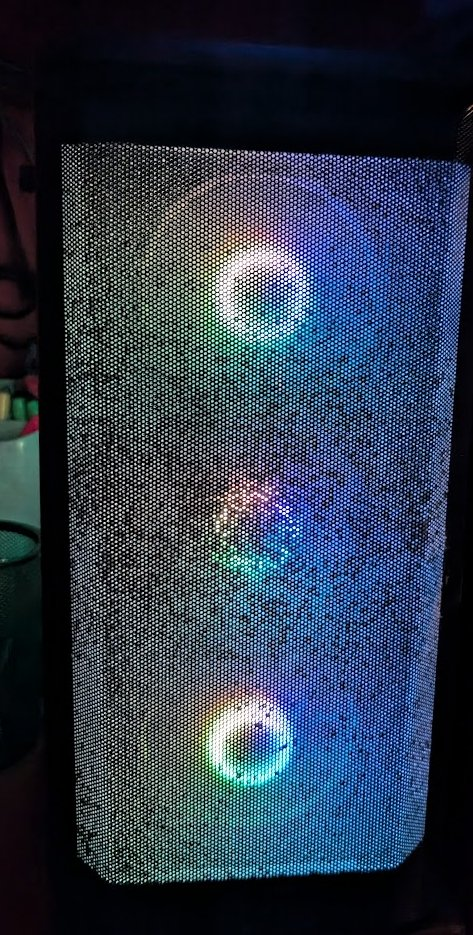 |
Role: Primary workstation / Hyper-V host / AI powerhouse Motherboard: MSI PRO Z690-A WIFI (MS-7D25) CPU: Intel i7-13700K (16 cores / 24 threads — Raptor Lake 2022) RAM: 128GB DDR5 4000MHz — 4x 32GB: G.Skill + Crucial RAM max: 128GB — maxed ✅ dmidecode-confirmed 2026-07-21 BIOS: AMI A.F0 (2023-11-13) OS: Windows 11 + Hyper-V GPU: NVIDIA GeForce GTX 1080 Ti (11GB VRAM) + Intel UHD Graphics Form factor: Phanteks Eclipse P400A — mesh front, tempered glass, RGB IP: 192.168.1.100 Name: Amontillado — Poe Best uses: Primary workstation, Hyper-V host, AI workloads, heavy compilation, anything that needs 128GB RAM Easy upgrades: Upgrade GPU to RTX 3090/4090 for serious AI work — i7-13700K won't bottleneck it. |
| ### Storage | |
| Drive | Size |
| ------- | ------ |
| Disk 0 | 465GB |
| Disk 1 | 2.79TB |
| Disk 2 | 931GB |